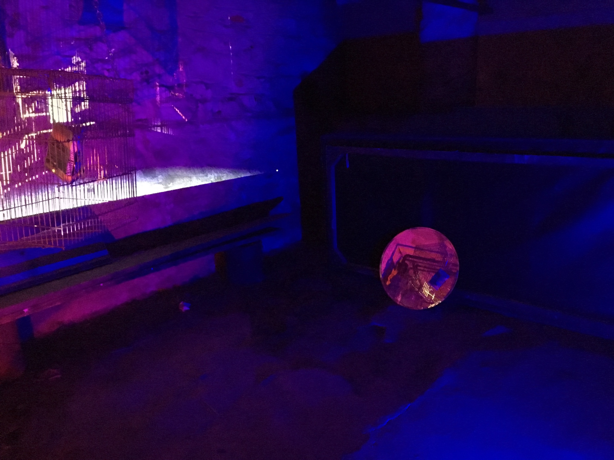

Some photos

- 
View a video walkthrough of the installation: https://youtu.be/dPIHiOllZpI
View the source of the projected visuals: birdsculpture.kevinroark.com
Was viewable at 25 Kingsland on 12/11/2016.
A birdcage is hung from the ceiling of a basement by chains.
My paperback copy of Freedom is stitched with a thinner chain and suspended within the cage.
One mirror is placed below the cage, and another to its right.
The cage and the novel were individually 3D-scanned into digital models, and a 3D digital fascimile of the physical sculpture
(including the book, birdcage, and mirrors) is projected onto the sculpture itself and the wall behind it.
The textures of the digital novel and mirrors sometimes "glitch" into recent video footage I have taken of wild birds.
Ambient birdsong is played at a low volume.
A red floodlight and a blue floodlight are placed at opposite ends of the space.
The laptop from which the projection is sourced is placed on a table such that the video is also viewable on its screen.
My recent perverse pleasure in taking video of wild birds and watching them in realtime through the LCD
screen of my video camera (referred to by a friend as the pleasure of perceiving instant objectification).
Replication and the process of projecting a copy of a thing onto itself (and the triple-replication of viewing
that projection through mirrors or on the laptop screen).
My very guilty voracious consumption of Jonathan Franzen novels and the physical destruction of
that guilt with a drill.
The phrase "FREEDOM IN A CAGE."
If you have any questions contact me - kevin.e.roark@gmail.com !!